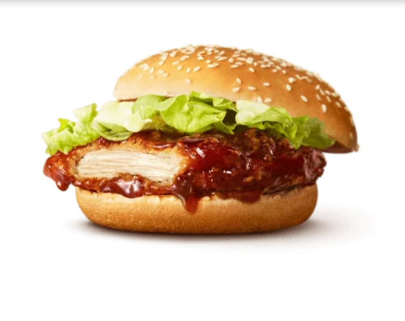

てりやきチキンフィレオ
サクサクのジューシーなチキンパティに甘辛てりやきソースを絡めた、食べ応えのあるマクドナルド唯一の「揚げ×てり」のバーガー
商品概要
メイン具材:てりやきソースで味付けされたチキンフィレ
付け合わせ:レタス、マヨネーズ
バンズ:標準的なハンバーガーバンズ
特徴
てりやきソース:甘辛い和風のソースで、醤油ベースで作られている。日本の伝統的な味付けが特徴で、甘みと旨みが調和しています。
チキンフィレ:ジューシーな鶏肉を使用しており、クリスピーな食感が楽しめます。香ばしく焼かれたフィレがソースとよく合います。
野菜とマヨネーズ:シャキシャキのレタスがフレッシュさを加え、マヨネーズが全体の味をまろやかにまとめています
こんな方におすすめ
和風の味付けが好きな方
甘辛いソースとジューシーなチキンの組み合わせを楽しみたい方
普通のハンバーガーとは一味違ったものを試したい方